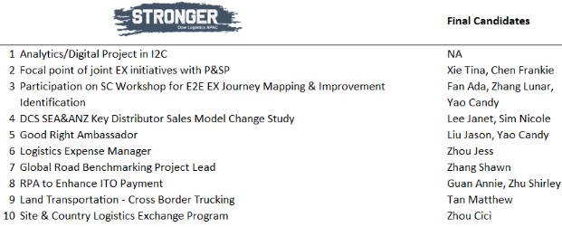

"Through this program, I wish to gain better understanding of the end to end process,
from demand planning to fulfilment. This way we can work together between modes,
more holistically in the future. "
---Vi Chien Chua, Terminal specialist
"Current efforts decided what will you be in the future." So, I took action to apply
OAS without any hesitative or doubt, would like to go with logistics big family
further, and become stronger, even strongest!
---Janet Lee, Senior Customs &Trade
compliance Specialist
"It has been always my desire to explore the knowledge & insight of different function
within logistics so the big picture can be seen. Hopefully I will live up to the
expectation and have the OAS project closed in success. "
---Shawn Zhang, Senior
MPC/Air Specialist
"I would encourage anyone to take the first step in identifying their interest and
discuss this with their leaders who can support in this. You wouldn’t know until
you take that first step forward! "
---Jeff Tay, Marine Planner
EVAS Achievements:
• 140+ improvement ideas from Dow Logistics team cross the APAC countries.
• 12 EVAS ideas identified and moved to feasibility study.
EVAS examples:
• New System Solution – Applying QR code on product label for easy accessing to MSDS and Dow.com (North Asia)
• Optimize Transportation Mode – Assessing rail transportation solution from Pusan to Jincheon (North Asia)
• Sustainable Solution – Recycling plastic pallet sharing (G China)
• Optimize Supply Chain – Indirect tax reduction opportunity for DCS business export to US (G China)
• New Logistics Solution – Re-use import containers for export shipments (SEA)
What is it for me?
• Initiate and take on opportunities for E2E exposure and exercise.
• Do more value adding activities instead of fire fighting
FFC Achievements:
• 2 FFC were submitted from Korea and Singapore team.
What is it for me?
• take the opportunity to try new improvements and/or valued solution without worry of failure
• Have more coach and support to implement ideas
OAS Achievements:
• Total 10 Development Programs & Projects posted till end of Q2.
• Total 16 applicants of AP Logistics employees applied OAS.
Hereafter is Q2 OAS Posting Result and congratulates to all the final candidates:

• training & Development opportunities will be continuously communicated
What is it for me?
• Skill and competency is 10% from learning, 20% from peer sharing and 70% from on-the-job practice. Take self-initiative to apply OAS based on individual growth plan.
• Take opportunity on cross modal, country, function exposure and exercise, and/or practice new technology and method.
Good vs Right Achievement:
• 135 good opportunities were identified in total.
• 97 have been eliminated/optimized.
• 1696 working hours, around 2% AP logistics employees' efforts have been released in the 1st half year.
Good Vs Right- Best practice sharing:
• Reduce repetitive manual work
Manual input for each service PO item was identified by SEA RTW team as a repetitive task. They worked with Ada Fan & DSS to turn on 'copy function' in ECC.
This simple change released 2 hours (2 hours per year? per person?) in task completion
• Process rationalization
APAC MPC/Air team developed the statistic analyze model to improve the accuracy of transit time configured in SAP instead of manual intervention in the past. The new approach save whole team monthly efforts from 22 hours to 12 hours while enhancing reliability of delivery confirmation date to customers in dynamic ocean marking.
What is it for me?
• Good vs Right is not only one time activity. Keep the mindset and find opportunities in the daily work, no matter big or small.
• The more opportunities can be identified and implemented, the more time can be utilized on improvement and value adding initiatives, and personal growth actions in learning and practice.
• share good practice/examples with two ambassadors (Jason Liu & Candy Yao) across the region, so to learn and leverage among people and teams.